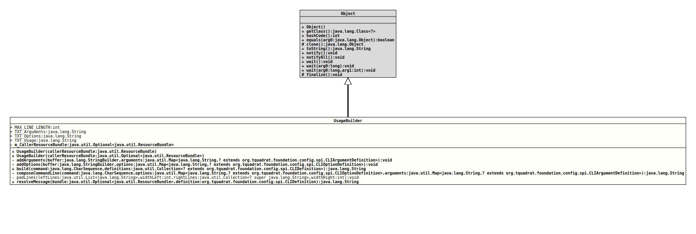

Class UsageBuilder
java.lang.Object
org.tquadrat.foundation.config.internal.UsageBuilder
@ClassVersion(sourceVersion="$Id: UsageBuilder.java 896 2021-04-05 20:25:33Z tquadrat $")
@API(status=INTERNAL,
since="0.0.1")
public class UsageBuilder
extends Object
Builds the usage message that will be printed to the console (or
wherever) in case help is requested on the command line, or an invalid
option or argument is provided on it.
- Author:
- Thomas Thrien (thomas.thrien@tquadrat.org)
- Version:
- $Id: UsageBuilder.java 896 2021-04-05 20:25:33Z tquadrat $
- Since:
- 0.0.1
- UML Diagram
-

UML Diagram for "org.tquadrat.foundation.config.internal.UsageBuilder"
{kind=link}
-
Field Summary
FieldsModifier and TypeFieldDescriptionprivate final Optional<ResourceBundle>The resource bundle that is used to translate the descriptions of options and arguments.static final intThe maximum line length: 80.static final StringThe Text 'Arguments'.static final StringThe text 'Options'.static final StringThe text 'Usage: ' that introduces the usage text. -
Constructor Summary
ConstructorsConstructorDescriptionUsageBuilder(Optional<ResourceBundle> callerResourceBundle) Creates a newUsageBuilderinstance.UsageBuilder(ResourceBundle callerResourceBundle) Creates a newUsageBuilderinstance. -
Method Summary
Modifier and TypeMethodDescriptionprivate voidaddArguments(StringBuilder buffer, Map<String, ? extends CLIArgumentDefinition> arguments) Adds the arguments to the output.private voidaddOptions(StringBuilder buffer, Map<String, ? extends CLIOptionDefinition> options) Adds the options to the output.final Stringbuild(CharSequence command, Collection<? extends CLIDefinition> definitions) Builds the usage text.private final StringcomposeCommandLine(CharSequence command, Map<String, ? extends CLIOptionDefinition> options, Map<String, ? extends CLIArgumentDefinition> arguments) Composes the sample command line.private static final voidpadLines(List<String> leftLines, int widthLeft, Collection<? super String> rightLines, int widthRight) Ensures that the left and the right part have the same number of entries and that the lines have the same length.final StringresolveMessage(Optional<ResourceBundle> bundle, CLIDefinition definition) Returns the message from the givenCLIDefinition
-
Field Details
-
MAX_LINE_LENGTH
The maximum line length: 80.- See Also:
-
TXT_Arguments
The Text 'Arguments'. -
TXT_Options
The text 'Options'. -
TXT_Usage
The text 'Usage: ' that introduces the usage text. -
m_CallerResourceBundle
The resource bundle that is used to translate the descriptions of options and arguments.
-
-
Constructor Details
-
UsageBuilder
Creates a newUsageBuilderinstance.- Parameters:
callerResourceBundle- The resource bundle that is used to translate the descriptions of options and arguments.
-
UsageBuilder
Creates a newUsageBuilderinstance.- Parameters:
callerResourceBundle- The resource bundle that is used to translate the descriptions of options and arguments.
-
-
Method Details
-
addArguments
private void addArguments(StringBuilder buffer, Map<String, ? extends CLIArgumentDefinition> arguments) Adds the arguments to the output.- Parameters:
buffer- The buffer for the result.arguments- The arguments.
-
addOptions
Adds the options to the output.- Parameters:
buffer- The buffer for the result.options- The options.
-
build
Builds the usage text.- Parameters:
command- The command string.definitions- The CLI definitions.- Returns:
- The usage text.
-
composeCommandLine
private final String composeCommandLine(CharSequence command, Map<String, ? extends CLIOptionDefinition> options, Map<String, ? extends CLIArgumentDefinition> arguments) Composes the sample command line.- Parameters:
command- The command.options- The options.arguments- The arguments.- Returns:
- The command line.
-
padLines
private static final void padLines(List<String> leftLines, int widthLeft, Collection<? super String> rightLines, int widthRight) Ensures that the left and the right part have the same number of entries and that the lines have the same length.- Parameters:
leftLines- The lines on the left side.widthLeft- The length for the lines on the left side.rightLines- The lines on the right side.widthRight- The length for the lines on the right side.
-
resolveMessage
Returns the message from the givenCLIDefinition- Parameters:
bundle- The resource bundle.definition- TheCLIDefinition.- Returns:
- The resolved message.
-